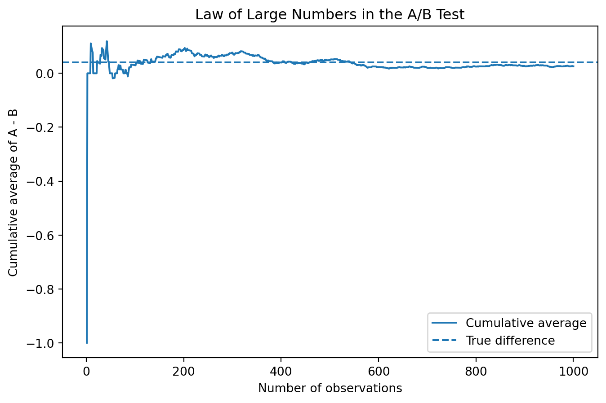

Simulating Key Ideas from Classical Frequentist Statistics
Author
Jiachen Xu
Published
April 21, 2026
Introduction
Suppose I run a website with a landing page that includes a newsletter sign-up section. I want to know whether changing the wording of the call to action (CTA) can increase the share of visitors who sign up.
To study this, I compare two possible CTAs. CTA A reads “Sign up for our newsletter here!” and CTA B reads “Stay up to date by signing up!”. I use an A/B test to evaluate which version performs better. In an A/B test, visitors are randomly assigned to see one of the two versions, and I compare the sign-up rates across the two groups. This random assignment helps isolate the effect of the CTA wording itself, rather than differences across visitors.
The A/B Test as a Statistical Problem
For each visitor, there are only two possible outcomes: either the visitor signs up for the newsletter or does not. Because the outcome is binary, it is natural to model each observation as a draw from a Bernoulli distribution with parameter \(\pi\), where \(\pi\) represents the probability of signing up.
Since the CTA wording may affect behavior, I allow that probability to differ across the two groups. Let \(\pi_A\) be the sign-up probability for visitors who see CTA A, and let \(\pi_B\) be the sign-up probability for visitors who see CTA B. For each visitor, the observed outcome is either 1 (sign-up) or 0 (no sign-up).
The parameter of interest is the difference in sign-up rates between the two CTAs:
\[
\theta = \pi_A - \pi_B
\]
To estimate this quantity, I use the difference in sample means:
\[
\hat\theta = \bar{X}_A - \bar{X}_B
\]
Because each observation is either 0 or 1, the sample mean in each group is simply the sample proportion of visitors who signed up. That means \(\bar{X}_A = \hat\pi_A\) and \(\bar{X}_B = \hat\pi_B\), so the estimator is just the observed difference in sign-up rates between the two groups.
Simulating Data
In a real A/B test, I would not know the true values of \(\pi_A\) and \(\pi_B\). I would only observe the outcomes in my sample and use them to estimate the underlying sign-up rates. For this exercise, however, I will set the true probabilities myself so that I can study how the estimator behaves when the truth is known.
Suppose the sign-up probability under CTA A is \(\pi_A = 0.22\) and the sign-up probability under CTA B is \(\pi_B = 0.18\). The true treatment effect is therefore:
\[
\theta = \pi_A - \pi_B = 0.04
\]
I now simulate 1,000 visitors in each group and record whether each visitor signs up (1) or does not sign up (0).
import numpy as npimport pandas as pdimport matplotlib.pyplot as pltfrom scipy import statsimport statsmodels.api as smnp.random.seed(495)n =1000pi_A =0.22pi_B =0.18theta_true = pi_A - pi_Bx_A = np.random.binomial(1, pi_A, n)x_B = np.random.binomial(1, pi_B, n)theta_hat = x_A.mean() - x_B.mean()theta_hat
np.float64(0.026000000000000023)
The Law of Large Numbers
The Law of Large Numbers tells us that as the sample size grows, the sample mean converges to the population mean. In this setting, that idea matters because our estimator is the difference in sample means, \(\hat\theta = \bar{X}_A - \bar{X}_B\). If the two groups are large enough, we should expect this estimator to get closer to the true treatment effect \(\theta\).
To illustrate this, I compute the element-wise differences between the simulated CTA A and CTA B outcomes and then calculate the cumulative average of those differences. Early on, the running mean should be noisy because each new observation has a large effect. As more observations are added, the running mean should settle down and move closer to the true difference of 0.04.
diff_vec = x_A - x_Bcum_avg = np.cumsum(diff_vec) / np.arange(1, n +1)lln_df = pd.DataFrame({"n_obs": np.arange(1, n +1),"cum_avg": cum_avg})plt.figure(figsize=(8, 5))plt.plot(lln_df["n_obs"], lln_df["cum_avg"], label="Cumulative average")plt.axhline(theta_true, linestyle="--", label="True difference")plt.xlabel("Number of observations")plt.ylabel("Cumulative average of A - B")plt.title("Law of Large Numbers in the A/B Test")plt.legend()plt.show()

At small sample sizes, the cumulative average moves around quite a bit because each additional observation has a noticeable effect on the running mean. As the sample size increases, the line becomes more stable and moves closer to the true difference of 0.04. This is exactly the pattern predicted by the Law of Large Numbers and helps explain why larger experiments produce more reliable estimates.
Bootstrap Standard Errors
Now that I have an estimate of the treatment effect, the next question is how precise that estimate is. A point estimate alone is not enough, because it does not tell us how much sampling uncertainty remains. To address that, I use the bootstrap to estimate the standard error of \(\hat\theta\) and then construct a confidence interval.
The bootstrap is a resampling method that estimates the variability of a statistic without requiring a closed-form derivation. The basic idea is simple: repeatedly resample, with replacement, from the observed data, recompute the statistic of interest each time, and then measure how much those resampled estimates vary.
The bootstrapped standard error is 0.0175, while the analytical standard error is 0.0175. These two values are very close, which is reassuring because it suggests that the resampling approach and the formula-based approach are telling a similar story about the precision of the estimator.
Using the bootstrapped standard error, I construct a 95% confidence interval for \(\theta\) of [-0.0083, 0.0603]. This interval gives a range of plausible values for the true difference in sign-up rates between CTA A and CTA B. Because the interval includes zero, the data are also consistent with no true difference between the two CTAs at the 95% confidence level. At the same time, most of the interval lies above zero, so the point estimate still suggests that CTA A may perform better than CTA B.
The Central Limit Theorem
The Central Limit Theorem says that even when the underlying data are not Normally distributed, the sampling distribution of the sample mean becomes approximately Normal as the sample size grows. In this example, each individual observation is Bernoulli, so it takes only the values 0 and 1. Even so, the difference in sample means, \(\hat\theta = \bar{X}_A - \bar{X}_B\), should become more bell-shaped across repeated samples when the group sizes are large enough.
To illustrate this, I repeatedly simulate experiments at four different sample sizes: \(n \in \{25, 50, 100, 500\}\). For each sample size, I generate 1,000 values of \(\hat\theta\) and plot their distribution.
At smaller sample sizes, the histogram of \(\hat\theta\) can look rough, irregular, or somewhat asymmetric. As the sample size increases, the distribution becomes smoother and more bell-shaped. This is the pattern predicted by the Central Limit Theorem. It explains why Normal-based approximations become more useful in large samples, even when the underlying data are binary rather than Normal.
Hypothesis Testing
Now that the Central Limit Theorem gives us a reason to treat \(\hat\theta\) as approximately Normal in large samples, we can use that approximation to run a formal hypothesis test. The null hypothesis is:
\[
H_0: \theta = 0
\]
which says that the two CTAs have the same true sign-up rate. The alternative hypothesis is:
\[
H_1: \theta \neq 0
\]
which says that the two CTAs produce different sign-up rates. The purpose of the test is to ask whether the observed difference in the data is large enough that it would be unlikely to occur if the null hypothesis were true.
To do this, I standardize the estimator using its standard error:
\[
z = \frac{\hat\theta - 0}{SE(\hat\theta)}
\]
The logic is straightforward. By the CLT, \(\hat\theta\) is approximately Normal in large samples. Under the null, its mean is 0. When I divide by its standard error, I get a standardized statistic that is approximately distributed as a standard Normal random variable. Once I know the reference distribution under the null, I can compute a p-value.
This kind of test is often casually called a t-test, but in this setting it is more accurate to think of it as a large-sample z-test. The classical t-test comes from a Normal-data setting with estimated variance and has an exact t-distribution result. Here the data are Bernoulli, not Normal, so the exact t-distribution result does not apply. Instead, the justification comes from the CLT and the Normal approximation. In large samples, the distinction matters little in practice, but it is still useful to understand where the approximation comes from.
The test statistic is 1.4858, and the corresponding two-sided p-value is 0.1373. The test statistic measures how many standard errors the observed estimate is away from the null value of zero. Because the p-value is greater than 0.05, I do not reject the null hypothesis at the 5% significance level. Although the estimated difference is positive, the evidence is not strong enough to conclude that the two CTAs differ in performance in this simulated sample.
The T-Test as a Regression
The two-sample comparison above can also be written as a simple linear regression. This is useful because it shows that hypothesis testing and regression are closely connected. In more complicated experimental settings, the regression framework becomes especially valuable because it can easily incorporate controls, interactions, and additional treatment groups.
To set up the regression, I stack the two samples into one dataset. For each observation, I define an outcome variable \(Y_i\) that equals 1 if the visitor signs up and 0 otherwise. I also define an indicator variable \(D_i\) that equals 1 if the visitor saw CTA A and 0 if the visitor saw CTA B. I then estimate the model
\[
Y_i = \beta_0 + \beta_1 D_i + \varepsilon_i
\]
In this regression, \(\beta_0\) is the expected value of \(Y_i\) when \(D_i = 0\), which is the mean sign-up rate in group B. The quantity \(\beta_0 + \beta_1\) is the expected value of \(Y_i\) when \(D_i = 1\), which is the mean sign-up rate in group A. That means \(\beta_1\) is exactly the difference between the two group means, so \(\beta_1 = \pi_A - \pi_B = \theta\).
The estimated treatment coefficient is 0.0260, with standard error 0.0175, t-statistic 1.4850, and p-value 0.1377. These values are very close to the earlier two-sample results, which is exactly what we should expect. This equivalence matters because it shows that the same regression tools used throughout applied statistics can also analyze simple A/B tests, while also extending naturally to richer experimental designs.
The Problem with Peeking
A common temptation in A/B testing is to look at the results repeatedly as data arrive and stop the experiment as soon as one version appears to win. This is often called peeking. Under classical frequentist statistics, that is a problem because each hypothesis test creates another opportunity for a false positive.
A single test at the \(\alpha = 0.05\) level has a 5% probability of rejecting the null when the null is actually true. But if I test the same experiment over and over as more observations accumulate, the overall probability of seeing at least one significant result becomes larger than 5%. In other words, repeated peeking inflates the Type I error rate.
To demonstrate this, I simulate a setting where the null hypothesis is true: both CTAs have the same sign-up probability, so \(\pi_A = \pi_B = 0.20\). In each simulated experiment, I generate 1,000 observations per group and check the z-test after every 100 observations per group. I then record whether at least one of those ten peeks produces a p-value below 0.05.
The result above is the empirical false positive rate when I allow repeated peeking. It should be noticeably larger than the nominal 0.05 rate from a single test. This happens because each interim look gives me another chance to reject the null by random fluctuation alone.
In practice, this means that repeatedly checking an experiment and stopping early whenever a result looks significant can make weak evidence appear stronger than it really is. If I want to monitor results over time, I need methods that explicitly adjust for sequential testing rather than using the same fixed 5% cutoff at every peek.